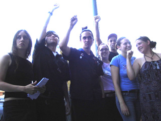
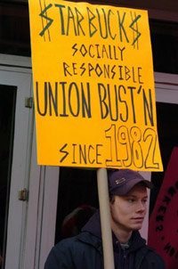

Submitted on Tue, 08/08/2006 - 3:43am
Disclaimer - The following is an editorial by members of the Bay Area; it is not currently the official position of the IWW.
By Zapatita - Bay Area General Membership Branch, IWW
 The Zapatista Army of National Liberation, (EZLN), has been fighting for democracy, liberty and justice in the Southern Indigenous lands in Mexico well before 1994. Today, the Zapatistas are struggling for more than the indigenous people in Chiapas, but for all those across the world who have been exploited and robbed by the rich and the bad governments that serve them. Like the I.W.W., the EZLN is a humanitarian internationalist organization, who fight for the "humble and simple" people, the common, everyday working folks who belong to "civil society", the majority who do not belong to political parties.
The Zapatista Army of National Liberation, (EZLN), has been fighting for democracy, liberty and justice in the Southern Indigenous lands in Mexico well before 1994. Today, the Zapatistas are struggling for more than the indigenous people in Chiapas, but for all those across the world who have been exploited and robbed by the rich and the bad governments that serve them. Like the I.W.W., the EZLN is a humanitarian internationalist organization, who fight for the "humble and simple" people, the common, everyday working folks who belong to "civil society", the majority who do not belong to political parties.
Submitted on Sat, 08/05/2006 - 9:20pm
Hey everyone
IWW General Assembly is coming up. After two days of debating and a rally at the Shattuck Cinema, you can get a little bay area sun and exercise at the WobblyCat! This is going to be a great IWW themed bike race for local bike messengers and Wobblies coming from around the country.
The way it works is like this. We will all be meeting at a designated spot in San Francisco, where you will get a manifest listing all the stops you need to make around the city. (Out of towners won't have to make as many stops as locals, don't worry). We'll be visiting places like Dashiell Hammett's house (the Pinkertons tried to pay him $5000 to kill
Submitted on Sat, 08/05/2006 - 2:16pm
Workers at Shattuck Cinemas in Berkeley and all Landmark Cinema employees nation wide are about to receive a pay increse. At Shattuck Cinemas in Berkeley the starting wage goes up to $8 per hour from $7.25. That's if the workers choose to accept it. Landmark attorney Tom Pavone sent a letter announcing the pay raises to the IWW along with spread sheet data showing the increase for each worker.
The IWW-Shattuckunion considers this to be a clear demonstration of union power and will continue to press the company for gains in benefits and improvments in working conditions. The IWW in the Bay Area along with union workers at Kendall Square cinema in Cambridge Mass., are the first two Landmark Cinemas to go union. There are approximately 60 Landmark theaters in total.
Submitted on Thu, 08/03/2006 - 2:38am
Whereas Industrial Workers of the World member and Starbucks barista Daniel Gross took part in a protest to defend the job of a fellow worker in the spirit of mutual aid and solidarity; and
Whereas Starbucks is currently engaging in a sham investigation of Fellow Worker Gross because of his participation in said protest and engagement in concerted activity; and
Whereas Starbucks will decide whether or not to fire FW Gross at the conclusion of the "investigation"; and
Whereas the IWW Starbucks Workers Union has made important improvements in wages and working conditions at the world's largest coffee chain through direct action on and at the job and involving workers throughout the community in the process; and
Whereas Starbucks continues to wage a relentless anti-union campaign to break the IWW presence at the company; and
Whereas despite the disgraceful union-busting from Starbucks including the retaliatory terminations of IWW members Joe Agins Jr., Charles Fostrom, and Evan Winterscheidt, the Wobbly campaign continues to grow; and
Whereas the IWW refuses to be silenced or intimidated by Starbucks, and has always stood by its motto: "An Injury to One is An Injury to All";
Now, therefore, be it RESOLVED,
That the General Executive Board of the Industrial Workers of the World will, in the event that Starbucks terminates FW Gross, encourage international labor organizations and supporters to publicly condemn Starbucks' behavior and be prepared to take further action until such time that he is reinstated.
Submitted on Mon, 07/24/2006 - 1:26am
We deserve it! Why? It's a sector of industry often overlooked as insignificant, but millions of people work hard within it. As more and more people are forced to work in service jobs the working poor are becoming increasingly poorer. It is time to come together and take what we deserve.
- The Landmark Cinema workers with lWW are attempting to negotiate a contract with Landmark to gain reasonable and appropriate working conditions.
- lWW will provide the most efficient structure for carrying on our daily struggle for better conditions and better pay.
- The working class deserves fair treatment including access to medical/vision/dental healthcare and reasonable compensation, you know, a living wage. No long term employee should be denied raises after years of service.
- No employee working on Christmas day should be paid less than time and a half.
- No job should be considered too trivial for a full time employee to have access to healthcare.
Our sister theater, The Kendell in Boston, has been negotiating for nine months and has made limited progress towards a fair contract. The Landmark Shattuck Cinema workers voted overwhelmingly for the Union on June 16th 2006. We demand a fair contract now!